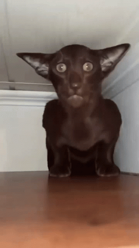

Gato tigrado
O gato tigrado tem variações de cores,
podendo ser
marrom, chocolate, canela, amarelo, cinza entre várias
outras combinações
Comportamento do gato cinza tigrado
- Instituto Federal
- Campus São Paulo
- Tetris
- O gato cinza tigrado tinha vantagens na natureza
- A marca de um "M" na testa dos Grey Tabbys é rodeada de lendas
- A genética dos gatos cinzas malhados
- Diferentes pelagens
- marrom
- chocolate
- canela
- amarelo
- cinza
